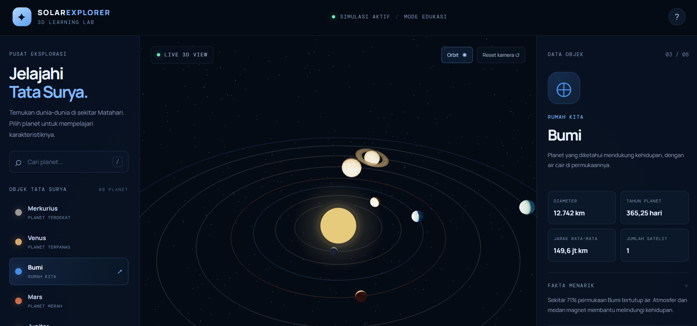

Web Development
Membangun antarmuka web dan mengembangkan fitur dasar aplikasi.
Halo, saya Ivan Maulana Muiz. Saya tertarik mengembangkan aplikasi web, aplikasi mobile, dan antarmuka digital yang fungsional serta mudah digunakan.
Saya adalah mahasiswa Teknologi Informasi di Universitas Bina Sarana Informatika (UBSI) yang sedang mengembangkan kemampuan di bidang teknologi.
Saya memiliki pengalaman mengerjakan proyek akademik dan personal, mulai dari website berbasis web, aplikasi mobile, hingga perancangan UI/UX. Saya senang mempelajari teknologi baru melalui praktik langsung dan membangun proyek secara bertahap.
Saat ini saya ingin terus meningkatkan kemampuan teknis, memperkuat portofolio, dan mencari kesempatan magang atau kolaborasi di bidang IT.
Mari terhubung ↗Beberapa teknologi dan tools yang pernah saya gunakan dalam pembelajaran maupun pengerjaan proyek.
Membangun antarmuka web dan mengembangkan fitur dasar aplikasi.
Mempelajari pengembangan aplikasi mobile dengan Flutter.
Menyusun antarmuka dan alur penggunaan untuk proyek digital.
Tools untuk pengembangan, pengujian, dan pengelolaan kode.
Catatan: daftar ini menunjukkan teknologi yang pernah digunakan, bukan klaim bahwa seluruhnya sudah dikuasai secara profesional.
Website toko kue dengan halaman produk dan pengembangan fitur keranjang serta database.
Lihat repositori ↗Proyek portal berita berbasis web menggunakan PHP, JavaScript, CSS, dan MySQL.
Proyek akademikProyek aplikasi pencatatan keuangan dengan Flutter, Dart, SQLite, dan Provider.
Proyek akademikWebsite edukasi mitigasi gempa dengan model rumah 3D, materi, video, audio, dan kuis interaktif.
Lihat project ↗Eksplorasi kehidupan laut dengan konsep visual 3D, mode akuarium, dan mode menyelam.
Lihat project ↗
3D / EDUCATIONProyek visualisasi tata surya 3D untuk mengeksplorasi pemrograman dan visualisasi edukasi.
Lihat project ↗Sebagian proyek belum memiliki tautan demo publik. Status dan deskripsi dapat diperbarui setelah versi final setiap proyek siap.
Pengalaman organisasi dan kolaborasi yang mendukung perkembangan saya di bidang teknologi.
Berperan dalam UI/UX Design pada proyek kelompok IT Bootcamp RuteAman yang meraih juara 3.
Terlibat dalam kegiatan divisi akademik dan prestasi serta pengembangan materi terkait dunia IT.
Mahasiswa Program Studi Teknologi Informasi.
Saya terbuka untuk kesempatan magang, kolaborasi proyek, dan diskusi seputar teknologi.
Kirim Email ↗